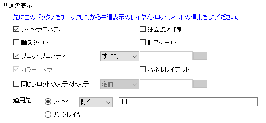
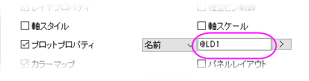

(作図の詳細) レイヤタブ
PD-Dialog-Layers-Tab
レイヤタブの設定はグラフページの全レイヤに適用されます。
- 共通の表示: レイヤ、プロット、および軸のプロパティを同時に編集できるようにするコントロール
- 描画順: 背景色と重なり合うレイヤの描画動作
- レイヤアイコンでのみアクティブレイヤを設定: アイコンをクリックするとアクティブレイヤに設定するように制限
- グラフウィンドウをアクティブにしてグラフ内の空白部分でダブルクリックし、作図の詳細ダイアログの左パネルでGraphの階層をクリックして選択します。あるいは、メニューからフォーマット: 作図の詳細（ページ属性）を選択します。
- レイヤタブをクリックします。
共通の表示
共通の表示コントロールを使用するには、編集する前に下のボックスをチェックします。例えば、多層グラフに対して各レイヤレベルを同じ色に揃えるとします。それには、各プロットを個別に選択し、[スタイル]ツールバーの塗りつぶしボタンと線/線の色ボタンを使用してそれぞれに同じ色を適用します。または、レイヤ タブのプロットプロパティボックスにチェックを入れて、すべてのレイヤレベルを一度に変更することもできます。
作図の詳細：「共通の表示」グループ
- 
- 共通の表示コントロールを使用するには、プロットを編集する前にこのチェックボックスにチェックを付けます。
- 作図の詳細を閉じても、選択されたプロパティをミニツールバーや書式およびスタイルツールバーボタンで編集を続けることができます。
- グラフレベルのミニツールバーで共通の表示項目にアクセスすることもできます。レイヤの外側でグラフページの上部にカーソルを移動してクリックすると、ツールバーを開けます。そして共通の表示ボタンをクリックします。これにより、さまざまな要素の共通の編集を有効または無効にするためのメニュー表示されます。
共通の表示、コントロールによる制御
| レイヤプロパティ
|
作図の詳細ダイアログのレイヤレベルの全タブの設定を、適用先コントロールの条件に従ったすべてのレイヤに適用します。次の点を除きます。
|
| プロットプロパティ
|
付随するドロップダウンリスト（すべて、インデックス、名前-次の段落を参照）で指定され、適用先の条件に従って、同じプロットタイプのプロットに作図の詳細ダイアログボックスのプロットレベルの全てのプロパティを適用します。同じグラフタイプであることが重要です（たとえば、折れ線グラフの区分グラフがあり、1つのプロットを縦棒グラフに変更するとします。 これにより、他の折れ線グラフは縦棒グラフに変更されません。作図の詳細の右側にあるプロットレベルのタブは、グラフタイプによって変わることがあります）。
デフォルトでは、プロパティの編集はすべてのプロットに適用されますが、同じプロットインデックス（レイヤ内のプロット順）のプロット、または同じ名前のプロットへの変更に制限できます。プロットプロパティグループが名前の場合は、テキストボックスの右側にあるフライアウトメニューをクリックして、グループを定義するブック、シート、または列のメタデータのビットを選択します。その後のプロットプロパティの変更は、そのグループにのみ適用されます。メタデータ構文の詳細については、この@Optionのリストを参照してください。
- 
さらに、プロットプロパティドロップダウンが名前に設定されている場合、作図の詳細（プロット属性）のグループタブの編集モードは独立に設定されます。
|
| カラーマップ
|
適用先の条件に従って、作図の詳細ダイアログのカラーマップ/等高線タブでカラーマップ設定（レベルと色塗り）を適用します。
|
| 軸スタイル
|
軸ダイアログのスケールと軸破断を除く、すべてのタブの設定を適用先コントロールの条件に従ったすべての同じ軸（下/上/左/右）に適用します。
|
| 軸スケール
|
軸ダイアログのスケールと軸破断タブの設定を適用先コントロールの条件に従ったすべての同じ方向の軸（水平/垂直）に適用します。
|
| 同じプロットの表示/非表示
|
このチェックボックスとドロップダウンを組み合わせて使用し、適用先コントロールの条件に従った同じ名前または、インデックスのプロットを表示または非表示にします。
Origin 2020から、この中央のドロップダウンボックスで名前を選択すると、後続のボックスで照合する名前のパターンを入力できます。そして右矢印ボタン_Layers_Tab/Button_Arrow_in_Legend_Tab.png) をクリックして、よく使用されるパターンの表記(@オプション)のリストを使って一致する名前を指定できます。テキストラベルオプション表を参照して、サポートされる表記を確認できます（一度に複数のパターンが入力された場合、すべてのパターンが一致する必要があることに注意してください）。パターンが入力されていない場合、プロットの既存の凡例エントリを使用してプロットに一致させます。 をクリックして、よく使用されるパターンの表記(@オプション)のリストを使って一致する名前を指定できます。テキストラベルオプション表を参照して、サポートされる表記を確認できます（一度に複数のパターンが入力された場合、すべてのパターンが一致する必要があることに注意してください）。パターンが入力されていない場合、プロットの既存の凡例エントリを使用してプロットに一致させます。
ボックスをチェックするだけでは、表示も非表示もしないことに注意してください。条件を設定したら、次の方法でプロットを表示または非表示にすることができます。
- 作図の詳細の左パネルにあるプロットの横のチェックボックスをオンまたはオフにします。
- オブジェクトマネージャのプロットの横にあるチェックボックスをオンまたはオフにします。
|
| パネルの配置
|
主に二重Yトレリスプロットに適用できます。このボックスをチェックすることは、以下のプロパティが適用先コントロールの条件に従ったレイヤ間で共有することを意味します。
_Layers_Tab/PD_Layers_CD_Panel_Layout.png)
トレリスプロットの詳細は、トレリスプロットとプロットの詳細パネルタブを参照してください。
|
| 適用先
|
レイヤ、プロット、軸、表示/非表示の設定を適用するレイヤを定義します。デフォルトはウィンドウ（ページ）内の全レイヤです。
- レイヤ:このボタンを選択すると、スペースで区切られたレイヤーのリスト（レイヤー名またはインデックスで識別）を共通の表示に含むか省くを選択できます。レイヤの名前は作図の詳細またはオブジェクトマネージャに表示されます。レイヤのインデックスは、グラフウィンドウの左上隅にあるレイヤアイコンに表示されます（例
_Layers_Tab/PD_CD_layerIcons.png) ）。 ）。
_Layers_Tab/PD_CommonDisplay_Apply_To.png)
- リンクレイヤ: レイヤへの編集は、リンクされたレイヤにのみ適用されます。（例: レイヤ2がレイヤ1にリンクされ、レイヤ4がレイヤ3にリンクされている場合、レイヤ1への変更はレイヤ2に影響しますが、レイヤ3およびレイヤ4には影響しません。同様に、レイヤ2への変更はレイヤ1に影響しますが、レイヤ3およびレイヤ4には影響しません。
|
独立したレイヤ/ビン制御
散布行列の場合、独立したレイヤ制御チェックボックスにチェックを付けて、すべてのレイヤのレイヤレベルでのレイヤプロパティの共通表示をオフにします。
散布行列では、独立ビン制御チェックボックスにチェックを付けて、対角レイヤの全てのヒストグラム/ボックスチャートのデータタブのビン化における共通表示設定をオフにします。自動ビン化のチェックを外して異なるビン設定が可能です。
描画順
すべてのレイヤを単一に合成して作図するは、仮に1つまたは両方のレイヤに背景色が設定されている場合、強制的に両方のレイヤのデータ表示に適用します。
『レイヤ毎に作図する』は、背景の設定があるレイヤ1の描画が完了したら、レイヤ2を描画します。 「作図の詳細」ダイアログボックスのツリー構造からレイヤ2を選択してレイヤ2に背景を指定し、『背景』タブから色を選択すると、レイヤ2の背景が1番目のレイヤの構成要素を覆います。背景無しにしておくと、レイヤ1はレイヤ2でも見えます。
レイヤアイコンでのみアクティブレイヤを設定
レイヤアイコンをクリックした場合のみレイヤをアクティブにするには、このチェックボックスにチェックを付けます。
レイヤを渡る棒/ボックスの間隔
このチェックボックスは、同じ位置の、レイヤをまたぐ縦棒/横棒/ボックスの隙間(ギャップ)やオフセットをコントロールする時にチェックします。
このチェックボックスは、以下の条件が整った時に利用できます。
- リンクされたレイヤがあるページ
- X 軸は親レイヤに直接リンクがある(作図の詳細ダイアログの軸スケール間のリンク対応タブ(レイヤレベル)で設定できる)
- 全てのリンクレイヤ領域ではリンクされたレイヤの％を使用し、左は0、幅は100に設定されている(レイヤレベルの作図の詳細ダイアログのレイヤの大きさタブで設定)
このチェックボックスが選択されている場合、縦棒/横棒グラフの隙間(ギャップ)あるいはレイヤをまたがるオフセットを作図の詳細ダイアログの棒の間隔タブ(親レイヤにリンクされている最初のデータプロット)で設定できます。他のリンクしているレイヤのコントロールはグレーアウトします。
レイヤ内で縦棒/横棒/ヒストグラムを並べる
1つのレイヤに複数の縦棒/横棒/ヒストグラムをプロットする場合は、このボックスにチェックを付けて、縦棒/横棒/ヒストグラムを同じX値に並べて配置できます。チェックを外すとプロットは重ねられます。